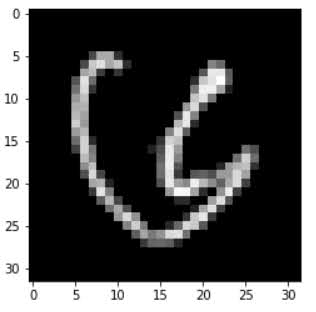
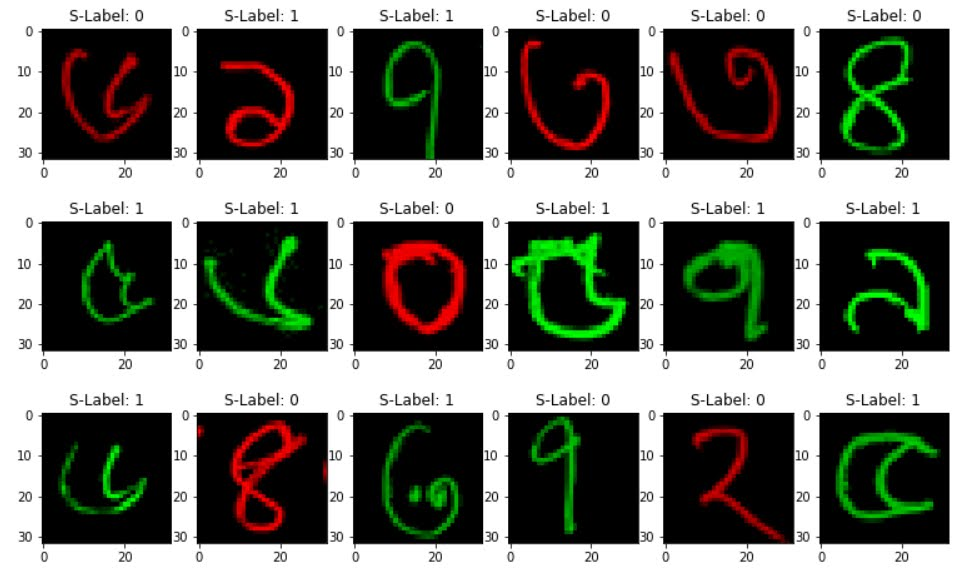

Welcome to todays Meeting
Deep Dream Group
Agenda
- Text Classification Tasks!
- Possible ICCIT!
- Fair Data Generation Project!
- Explainable Audio Classification!
Text Classification Task
- Finished part of Introduction
- Finished abstract
- Finished all the experiments
- Need to write all the remaining parts
Fair Bengali Handwritten Character Generation
Presented by: Md Fahim Sikder
Deep Dream Group
Motivation
- Data Fairness is needed!
- Trustworthy AI!
- Not much research has been done in Bengali!
Research Problem
- How can we create an Image dataset for Bengali domain?
- How we can generate fair generative models?
Data Fairness
- Real world data is full of bias
- COMPAS case in the USA
Bangla Sensitive Dataset

Bangla Sensitive Dataset

Generative Models
- GAN-based
- Diffusion-based
Possible Contribution
- Bangla Sensitive datasets
- Generative model
- Interpretability / Explainability
Explainable Audio Classification
Idea
- Train an audio classifier (preferably cnn/transformers based)
- Explain the results
- Compare different explainable techniques
Possible Contribution
- Unique model
- Explainability